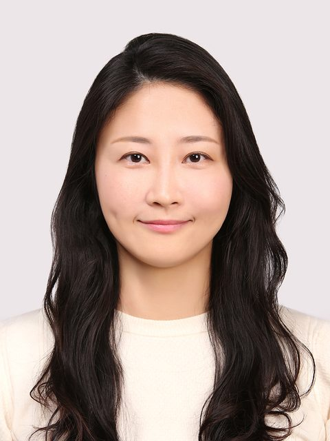

Department of Food Science and Nutrition, Pukyong National UniversityMarine Food Biochemistry Laboratory
The ocean's potential,
into the science of health.
Research Areas
Research Projects

PRINCIPAL INVESTIGATORPUKYONG NATIONAL UNIVERSITY
Principal Investigator
Bomi RyuPh.D.
Professor · Department of Food Science and Nutrition, Pukyong National University
Education
- 2011Ph.D., Department of Chemistry, Pukyong National University
- 2009M.S., Department of Chemistry, Pukyong National University
- 2007B.S., Department of Chemistry, Pukyong National University
Career
- 2025–Professor, Department of Food Science and Nutrition, Pukyong National University
- 2022–2025Associate Professor, Department of Food Science and Nutrition, Pukyong National University
- 2017–2022Research Professor, Department of Aquatic Life Medicine, Jeju National University
- 2016Research Officer, Institute for Molecular Bioscience, The University of Queensland, Australia
- 2013–2015Postdoctoral Research Fellow (UQ Postdoctoral Research Fellowship), School of Pharmacy, The University of Queensland, Australia
- 2011–2012Research Fellow, Department of Chemistry, Pukyong National University
Members as of November 2026.
Publications
Underlined: lab members, including alumni · Bold: principal investigator
Conference abstracts · Preprint
These are not journal articles and are not included in the count above.
News
Press and university news items open the original article (in Korean) in a new tab.
Album
Contact
bmryu@pknu.ac.kr- LOCATION
- Room 805, Fisheries Science Building 2
Daeyeon Campus, Pukyong National University
45 Yongso-ro, Nam-gu, Busan 48513, Republic of Korea - PHONE
- 051-629-5858
- AFFILIATION
- Pukyong National University
Department of Food Science and Nutrition